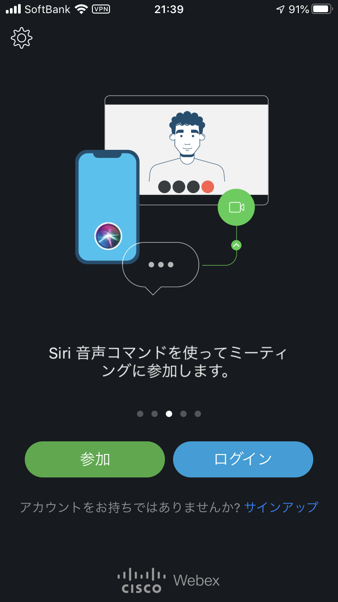

大学で使われはじめるWebEXについて、使用方法をなるべく詳しく説明していきます。今回はパソコン（Windows10）を使う場合についてです。
スマホ・タブレット版と同様です。
Google ChromeやMozilla FirefoxがインストールされているPCでは、ブラウザ版でも利用できますが、デスクトップアプリ版を利用することをおすすめします（毎回のサインインが初回のみで済む、動作がサクサクするなどの利点がある）。こちらからダウンロードできます。
アプリをダウンロードできたら、アプリを開きます。このときに、マイクとカメラのアクセスは許可にしておきましょう。利用規約に同意し、下の画面になればOKです（サインアップやログインは不要）。
最後に、遠隔授業ができるかどうかをテストします。工学部のホームページにWebEXのリンクが貼られているのでそちらにアクセスします。アプリが起動されると名前・メールアドレスが要求されますが、これは任意の名前・メールアドレスを入力します（これについては大学側から後に通知が来ると思われるが、現時点では名前はニックネームでもOK。ただしメールアドレスは正しく入力しないと次に進めない）。カメラ・マイクはオフにしておきます（他の人に音声・映像が届いてしまうため）。下の画面になり、音声が出力されてれば準備は完了しています。どちらかがうまく出力されてない場合は、音量や通信速度等を確認してください。